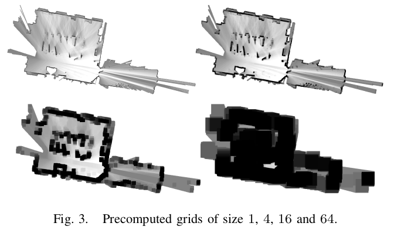

Cartographer
2022-01-21
1. Scan Matching
地图值的更新 \(p_{hit},p_{miss}\) 公式一致
ceres scan matching
\[\mathop{\arg\min}\limits_{\xi} \sum_{k=1}^{K}(1-M_{smooth}(T_{\xi}h_k))^2\]\(M_{smooth}\) 代表双三次插值法，用16个点近似\(\frac{\sin(x*\pi)}{x}\)，通常\(a=-0.5\)
\[\begin{split}S(x) = \left\{\begin{array}{rcl}(a+2)|x|^3+(a+3)|x|^2+1 & & 0\le|x|\le1\\ a|x|^3 - 5a|x|^2+8a|x|-4a & &1\le|x|\le2\\ 0 & &|x|\ge2\end{array}\right.\end{split}\]最近邻插值： 最近的点
双线性插值： 左右(上下)两个点插值
a pixel-accurate scan matching
这个可以在没有imu的时候使用
2. Closing Loops
\(\xi_i^m\)submap在地图中的变换，\(\xi_j^s\)激光雷达在地图中的变换，\(\xi_{i,j}\) 激光雷达与submap的变换。核函数是Huber Loss。
直观理解，下式相等，m: submap, s:scan, w:world
3. Branch-and-Bound Scan Matching
优化函数，也是栅格地图的值与观测值保持一致，\(\omega\)是滑动搜索框。
搜索的角度步长使得最远的激光点的变化程度小于一个栅格的距离。
Todo
这边栅格的值改为了最近邻的点，而不是三次插值。
每次搜索范围，x,y变换7m，即步长为\(\frac{30}{r}\)，角度变化30°，选项步长为\(\frac{30}{\sigma_{\theta}}\)。
3.1 Node Selection
总是从set里面选择分数最高的一个，即DFS。
3.2 Branching Rule
一个node由4个数组成的tuple构成，\((c_x,c_y,c_{\theta},c_h)\)，包含\(2^{c_h}*2^{c_h}\)个选项，角度唯一。
每一层将上一层的x,y分为4个部分。
3.3 Computing Upper Bounds
粗细分辨率的图，即地图值为\(2^h*2^h\)范围内的最大值，在粗分辨率地图的匹配值一定大于细分辨率的匹配值，所以得到了Upper Bounds。
粗分辨率的score是对每个激光点分开求T，必然大于细分辨率的情况。
例如，一个栅格分为四个小格子，00,01,10,11，有两个激光点，h1,h2，粗分辨率下，h1对应的T在00块，h2对应的T在11块。然而，在细分辨率00下，h2取不到最佳T(因为在11块)。所以，粗分辨率是上界。
